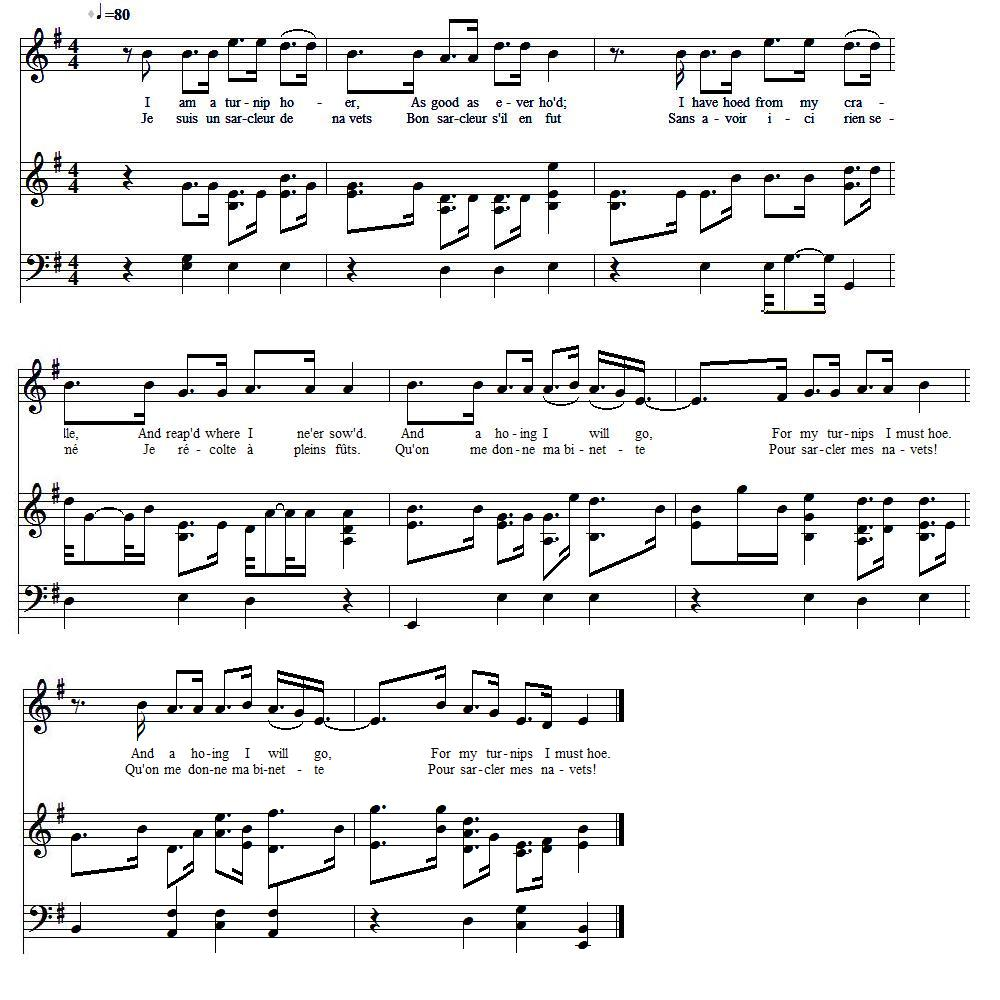
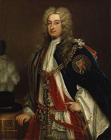
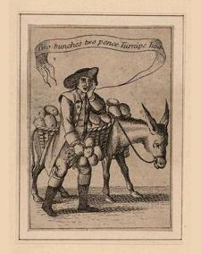

The Turnip
Le Navet
The Hanover Turnip Man - L'Homme aux navets de Hanovre
from a MS in the "DOUCE Collection", part of the "Rawlison MSS" in the Bodleian Library.
Tiré de la collection de manuscrits Douce, issue du recueil Rawlison de la Bibliothèque Bodléienne (Université d'Oxford)
Tune - Mélodie
"A-begging we will go"
from Hogg's "Jacobite Relics" 2nd Series N°63
Sequenced by Christian Souchon
|
To the tune:
The authorship of this song is attributed to Richard Brome (c. 1590 - 1653)--(he who once 'performed a servant's faithful part' for Ben Jonson)--in a black-letter copy in the Bagford Collection, where it is entitled "The Beggars' Chorus in the 'Jovial Crew,' to an excellent new tune . No such chorus, however, appears in the play, which was produced at the Cock-pit in 1641; and the probability is, as Mr. Chappell conjectures, that it was only interpolated in the performance. It is sometimes called The Jovial Beggar . The tune has been from time to time introduced into several ballad operas; and the song, says Mr. Chappell, who publishes the air in his "Popular Music in the Olden Times" (1859), 'is the prototype of many others, such as: A-bowling we will go, A-fishing we will go, A-hawking we will go A-hunting we will go . The last named is still popular with those who take delight in hunting, and the air is now scarcely known by any other title. Source "The Fiddler's Companion" (cf. Links). |
 |
A propos de la mélodie:
On trouve ce chant attribué à Richard Brome (vers 1590 - 1653 qui fut à une certaine époque le domestique de Ben Johnson, dans un exemplaire en lettres gothiques appartenant à la collection de John Bagford, où il porte le titre de "Choeur des mendiants de la 'Joyeuse compagnie', sur un excellent air nouveau . Cependant , dans la pièce en question, qui fut produite à l''Arène aux coqs' en 1641. Il est probable, comme le suppose M. Chappell, qu'il était simplement intercalé dans certaines représentations. Ce chant est parfois appelé Le joyeux mendiant . Cet air a été repris assez souvent dans des 'opéras-ballades'. Il sert, comme le dit M. Chappell dans son livre "Musique populaire du temps jadis" (1859), de prototypes à de nombreux autres, tels que: Faisons-nous joueurs de quilles, Faisons-nous pêcheurs, Faisons-nous fauconniers, Faisons-nous chasseurs... Ce dernier chant est encore populaire chez les amateurs de chasse, et c'est sous ce titre que ce timbre est le plus connu. Source "The Fiddler's Companion" (cf. Liens). |

|
AN EXCELLENT NEW BALLAD
To the Tune of "A-Begging we will go," [1] 1. I am a Turnip Ho-er, [2] As good as ever ho'd ; I have hoed from my Cradle, And reap'd where I ne'er sow'd. And a Ho-ing I will go, etc. For my Turnips I must Hoe. 2. With a Hoe for myself, And another for my Son ; A Third too for my Wife But Wives I've two, or None. [3] And a Ho-ing we will go, etc. 3. At Brunswick and Hanover I learned the Ho-ing Trade; From thence I came to England, where A strange Hoe I have made. And a Ho-ing we will go, etc. 4. I've pillag'd Town and Country round, And no Man durst say, No; I've lop'd off Heads, like Turnip-tops, Made England cry, High ! Ho ! And a Ho-ing I will go, etc. 5. Of all Trades in my Country, A Hoer is the Best; For when his Turnips he has ho'd, On a Turnip he can Feast. And a Ho-ing I will go, etc. 6. A Turnip once, we read, was A Present for a Prince; And all the German Princes have Ho'd Turnips ever since. And a Ho-ing I will go, etc. 7. Let Trumpets cheer the Soldier, And Fiddles charm the Beau; But sure 'tis much more Princely, to Cry ' Turnips, Turnips, Ho '! [4] And a Ho-ing I will go, etc. 8. With Iron-headed Hoes, let Dull Britons Hoe their Corn: But of all Hoes, give me a Hoe, For Turnips, tipped with Horn. And a Ho-ing I will go, etc. 9. If Britons will be Britons still, And horny Heads affront; I'll carry Home both Heads and Horns, And Hoe where I was wont. And a Ho-ing I will go, etc. 10. To Hanover I'll go, I'll go, And there I'll merry be; With a good Hoe in my right Hand, And Munster on my Knee. [5] And a Ho-ing I will go, etc. 11. Come on, my Turks and Germans, [6] Pack up, pack up, and go! - Let us take his Scepter, So I can have my Hoe. And a Ho-ing we will go, etc. [7] Source: C.H. Firth in "Scottish Historical Review", 1911, page 254. |
UNE EXCELLENTE NOUVELLE BALLADE
Sur l'air de "Faisons-nous mendiants!" [1] 1. Je suis un sarcleur de navets [2] Bon sarcleur s'il en fut Sans avoir ici rien semé Je récolte à pleins fûts. Qu'on me donne ma binette Pour sarcler mes navets! 2. Une binette pour moi-même, L'autre pour mon gamin Pour mon épouse une troisième -J'en ai deux. Je n'en ai point. [3] Qu'on me donne ma binette 3. C'est à Brunswick et à Hanovre Que j'appris le métier De là je débarquais à Douvres , Sarcleur sachant sarcler. Qu'on me donne ma binette 4. J'ai pillé les champs et les villes Sans que nul ne bronchât A couper les têtes habile. L'Anglais criait "hourra!" Qu'on me donne ma binette 5. Dans ce pays celui qui sarcle A le meilleur métier, Car de ces navets qu'il récolte Il peut se rassasier. Qu'on me donne ma binette 6. Les navets, nous dit la chronique, Etaient cadeaux princiers Et tous les princes germaniques Se sont mis à sarcler . Qu'on me donne ma binette 7. La trompette enflamme les braves, Le violon les galants. Mais les Princes vendent les raves Dans les rues en criant. [4] Qu'on me donne ma binette 8. A vos houes, Britanniques mornes, Et sarclez votre blé! Il me faut un manche de corne Pour sarcler mes navets. Qu'on me donne ma binette 9. Car un Briton qui se respecte, Les têtes encornées, Il les renvoie, cornes et têtes, Sarclant comme il lui plait. Qu'on me donne ma binette 10. Vers Hanovre je m'en retourne Le sort y est plus doux Dans ma main droite une binette Munster sur mes genoux. [5] Qu'on me donne ma binette 11. Il va falloir plier bagages, Mes Turcs et mes Germains. [6] - Mais laissez-nous le sceptre en gage, Cette houe nous revient! Qu'on me donne ma binette [7] (Trad. Christian Souchon (c) 2011) |
|
[1]
To the tune of 'A-begging I will go'
: The tune is chosen on purpose. The Hanoverian king who "reaped where they never sowed" is described as a parasite, a swindler and a debauchee like the beggar in the song.
 [2] This ballad illustrates one of the favourite popular jests against the Hanoverian kings. The turnip , introduced into England from Hanover, was satirically treated as the characteristic if not the sole product of the electorate, and the favourite diet of its rulers. This may be further illustrated by a caricature, viz. ' The Hanover Turnip-man Come Again,' number 2578 in the British Museum Catalogue of Satirical Prints.In another (modern?) song the Wee German Lairdie is "sheughing kail (ditching cabbage) and laying leeks". [3] But Wives I've two, or None : George I' s wife, Sophie Dorothea von Celle was imprisoned and their marriage dissolved in 1694. On the other hand the king had two mistresses, Madam Kielmansegge and Countess von der Schulenburg. [4] Cry "Turnips, Turnips, Ho!" : see caricature opposite. [5] Munster : The date of this ballad can be determined by the last verse but one: Melusina von der Schulenburg, the mistress of George I., was created Duchess of Munster , June 26, 1716, and Duchess of Kendal, March 19, 1719." [6] My Turks : By 1714, when George I became King of England, he took with him from Hanover his two Turkish protégés , Mustafa and Mehmet. Mehmet's mother and Mustafa's son would also reside in England. In 1716 King George I ennobled Mehmet, who adopted the surname "von Königstreu" (true to the king). (see Geordie's Testament , verse 11). [7] The Whig Charles Townshend (1674 -1738) who directed British foreign policy for a decade as Secretary of State, was interested in agriculture and was responsible for introducing into England the cultivation of turnips on a large scale and other improvements like the four-field crop rotation (wheat, barley, a root crop and clover), a key development in the British Agricultural Revolution. As a result, he became known as Turnip Townshend . Source: Notes 2 and 5: C.H. Firth in "Scottish Historical Review", 1911. Notes 6 and 7: Wikipedia |
[1]
Sur l'air de 'Faisons-nous mendiants'
: le timbre n'est pas choisi au hasard. Le roi hanovrien qui "récolte sans avoir rien semé" est présenté comme un parasite, un imposteur et un débauché comme le mendiant de la chanson.
 [2] Cette ballade illustre l'une des plaisanteries les plus goûtées du peuple contre les rois hanovriens. Le navet (turneps) , introduit en Angleterre depuis Hanovre était, pour les humoristes la caractéristique, sinon la seule production de l'Electorat et le met préféré de ses princes. C'est le thème d'une caricature intitulée "Le retour de l'homme aux navets" (n°2578 du Catalogue des imprimés satiriques du British Museum).Dans un autre chant (moderne) le Petit Lord Teuton est occupé à "creuser des rangées de choux et de poireaux". [3] J'en ai deux. Je n'en ai point : La femme de George I, Sophie Dorothée de Celle fut emprisonnée et leur mariage dissout en 1694. Par ailleurs, le roi avait deux maîtresses, Madame Kielmansegge et le comtesse de la Schulenbourg. [4] Dans les rues en criant : cf. caricature ci-contre. [5] Munster : La date de composition du chant peut être fixée entre 1716 et 1719, grâce à l'avant dernier couplet: Mélusine de Schulenbourg, la maîtresse de George I fut faite Duchesse de Munster le 26 juin 1716 et duchesse de Kendal le 19 mars 1719. [6] Mes Turcs : En 1714, quand Georges I devint roi d'Angleterre, il amena de Hanovre ses deux protégés turcs , Mustafa et Mehmet. La mère de Mehmet et le fils de Mustafa vinrent également résider en Angleterre. En 1716, le roi Georges anoblit Mehmet qui ajouta à son nom "von Königstreu" (fidèle au roi). (cf. Testament de Geordie , couplet 11). [7] Le Whig Charles Townshend (1674 -1738) qui dirigea la diplomatie britannique en tant que Secrétaire d'état, toute une décennie, s'intéressait à l'agriculture et on lui doit l'introduction de la culture du navet sur une large échelle et d'autres perfectionnements tels que l'assolement quadriennal (blé, seigle, céréales à racines et trèfle), un élément essentiel de la révolution agricole anglaise. Ce qui lui valut le surnom de Turnip (navet) Townshend . Source: Notes 2 and 5: C.H. Firth in "Scottish Historical Review", 1911. Notes 6 and 7: Wikipedia |
|
|
|
The Original Song: A-Begging we will go
Le chant original: Faisons-nous mendiants
|
1. Of all the trades in England the beggin' is the best
For when a beggar's tired, he can sit him down and rest. And a-beggin' I will go-o-o And a-beggin' I will go. 2. There's a poke for me oatmeal and another for me salt; Have a pair o' little crutches: thou should see how I can hold! 3. There's patches on me fusty coat, there's a black patch on me e'e But when it comes to tuppenny ale I can see as well as thee 4. Me breeches they are naught but holes but me heart is free from care As long as I've a belly full, me backside can go bare. 5. There's a bed for me where'er I lie. Count I don't pay no rent. I've got no noisy looms to mind and I am right content 6. I can rest when I am tired and I heed no Mister's bell A man maun be daft to be a king when beggars live so well 7. O I've been deaf at Duckinfield and I've been blind at Shaw And many's the right and willing lass I've bedded in the straw. No wonder that anarchistic song which reviles "noisy looms" and "Mister's bell" found its way into Ewan McColl's repertoire. This remarkable British folk singer was also a song writer, actor, playwright, record producer and, as the son of an iron moulder and militant trade-unionist, an active socialist... (if not, as recorded in a MI5 report in 1932, "a communist with very extreme views...")(!) |
Ewan Mac Coll (1915 - 1989) sings "And a-begging I will go" |
1. Rien ne vaut en notre Angleterre, le métier de mendiant,
S'il est las, il s'assoit par terre, pour souffler un moment. Ah, faisons-nous mendiants, Ah, faisons-nous mendiants! 2. J'ai pour mon avoine une poche, une autre pour le sel A mes béquilles je m'accroche: il n'y a rien de tel! 3. Manteau rapiécé de partout. Sur l'œi un bandeau noir Oui mais sur ma bière à deux sous, je veille et je peux voir. 4. Mes braies sont trouées, je sais bien, mais j'ai le cœur en paix! Tant que je sens mon ventre plein, le reste peut geler. 5. Où je couche, c'est là mon lit. Je fais fi des loyers. Je n'ai pas à surveiller de bruyants métiers à tisser 6. Me reposant quand je suis las, sans cloche ni patron. Fol est qui voudrait être roi, quand mendier c'est si bon. 7. J'ai fait le sourd à Duckinfield, je fus aveugle à Shaw. Sur ma paille plus d'une fille s'allongea sur le dos. Il n'est pas étonnant que ce chant anarchiste qui vilipende "les bruyants métiers à tisser" et "la cloche du patron", figure au répertoire d'Ewan McColl. Ce remarquable chanteur folk britannique fut aussi parolier, acteur, dramaturge, producteur de disques. Fils d'un syndicaliste actif de la sidérurgie, il fut aussi socialiste,... ou, à en croire un rapport du MI5 daté de 1932, "un communiste aux opinions extrémistes..." (!) |